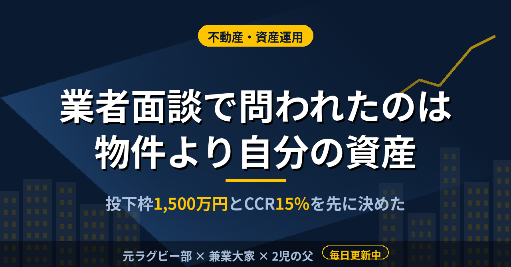
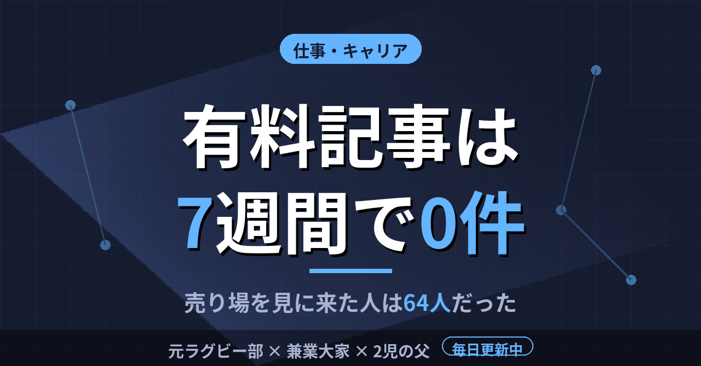
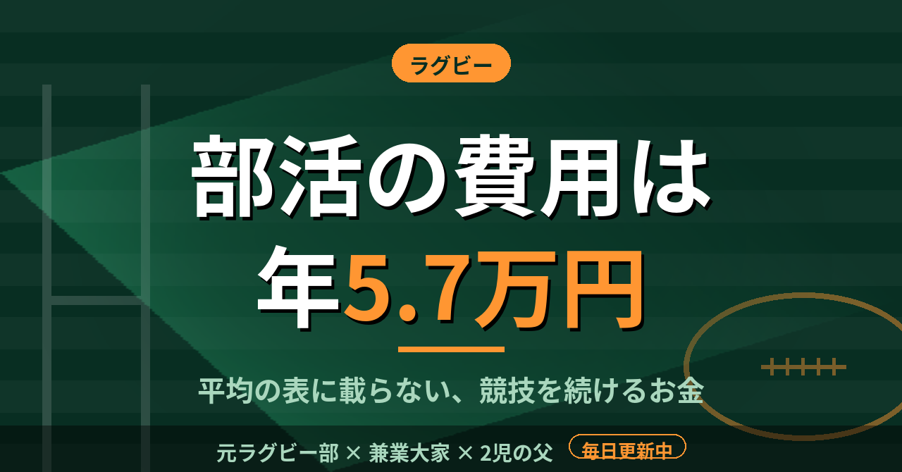
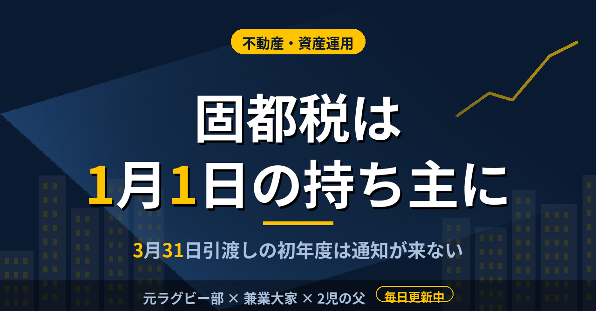
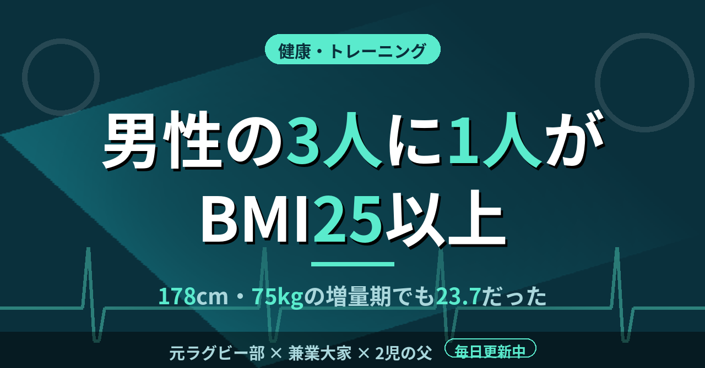

hohemaro15
ラグビー20年、不動産1棟。調べてから書く記録
このサイトについて
小学5年でラグビーを始めて、大学まで20年続けた。大阪の激戦区で6年、同志社大で4年。ポジションはユーティリティバックス。
今はメーカーで設備の電気を担当しながら、兵庫県尼崎市に木造9戸の一棟アパートを運用している。2児の父。
経験談だけで終わらせないために、書く前に必ず制度と統計を調べることにしている。数字が確認できなかった話は書かない。
書いていること
ラグビー
小5から大学まで20年。大阪の激戦区で見たこと、カテゴリが上がるたびに起きたこと。
不動産・資産運用
2016年に検討を始めて2026年に1棟目。判断基準と、断り続けた10年の話。
健康・トレーニング
増量の失敗と成功、サプリで肝臓の数値を悪くした経験、続けている設計。
子育て・家族
2歳と0歳を育てながらの時間の使い方と、資産形成の時間軸。
最近の記事
-

不動産・資産運用勧誘の禁止事項は2011年に3つ増えた。業者面談で整理したのは自分の資産だった
2棟目を探し始めてから、不動産会社の担当者と会う機会が増えた。物件の話をしに行ったつもりでも、最初に聞かれるのは僕自身のことだ。勤め先、勤続年数、金融資産、そのうちいくら出せるのか。面談を重ねるうちに、自分の資産背景を一…
-

仕事・キャリア240本書いて有料記事は0件。売り場を見に来た人は7週間で64人だった
9月下旬に、980円の有料記事を出した。不動産の1棟目を探すときに僕が使っている、物件の判定シートだ。7週間たった今日まで、売れたのは0件だった。…
-

ラグビー私立高校の部活などの費用は年5.7万円。ラグビーで受験した僕が父として数えた
僕が中学受験をしたのは、ラグビーができる環境に入るためだった。入った学校は大学までエスカレーター式の私立で、そこから同志社の4回生まで、ラグビーを続けた。2歳と0歳の父になった今、あの10年間を「続けるためのお金」の側か…
-

不動産・資産運用固都税は1月1日の持ち主に届く。3月31日に引渡しを受けた僕が仕組みを読んだ
1棟目の引渡しは2026年3月31日だった。年度が替わる前日だ。固定資産税と都市計画税、いわゆる固都税の通知書は毎年春に届くと聞いていたが、今年の分は僕のところには来ていない。…
-

健康・トレーニングBMI25以上の男性は32.4％。178cmで75kgまで増やした僕は23.7だった
高校のころ、僕は2リットルのタッパーでご飯を食べ、1日5〜6食とっていた。それでも178cmで60kg台後半から動かなかった。大学で1日7〜8食に増え、寮の食事とトレーナーのメニューが加わって、ようやく75kgまで乗った…
-
 仕事・キャリア
仕事・キャリア
精神障害の労災は1,055件、最多はパワハラ。後輩が潰れた理由が育休明けに分かった
新人がたくさん入ってきた時期、僕は後輩の面倒を見るのが楽しかった。ところが数年のうちに、その後輩の大半がいなくなった。適応障害と診断されて休んだ人もいれば、異動で離れた人もいる。…